KIM HYE REE 김혜리
ANIMATION
I dette tema blev jeg introduceret for javascript. Jeg lærte med Adobe illustrator at tegne vektoriseret illustrationer og sammen med javascript og css formåede jeg at udvikle mit eget spil.
SKITSER
For at komme godt i gang med min projekt skitserede baggrund, baggrundselementer og mine karakterer til spillet. Efterfølgende udvalgte jeg de skitser jeg bedst kunne lide så jeg kunne arbejde videre med dem i Illustrator.
ADOBE ILLUSTRATOR
I Adobe Illustrator fik jeg færdigheder med forskellige værktøjer, især direct selection tool og shape tool. Min erfaring med at arbejde med lag og grupper i både Figma og Illustrator gav mig en bedre organisering Derudover lærte jeg at tilføje farver til mit bibliotek, hvilket gjorde det lettere for mig under arbejdsprocessen.
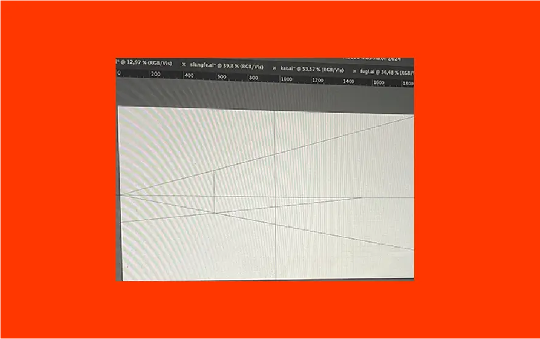
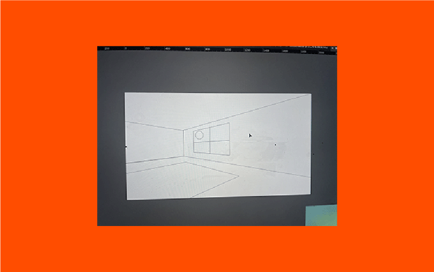
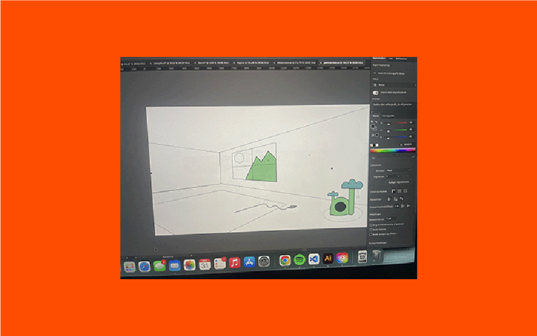
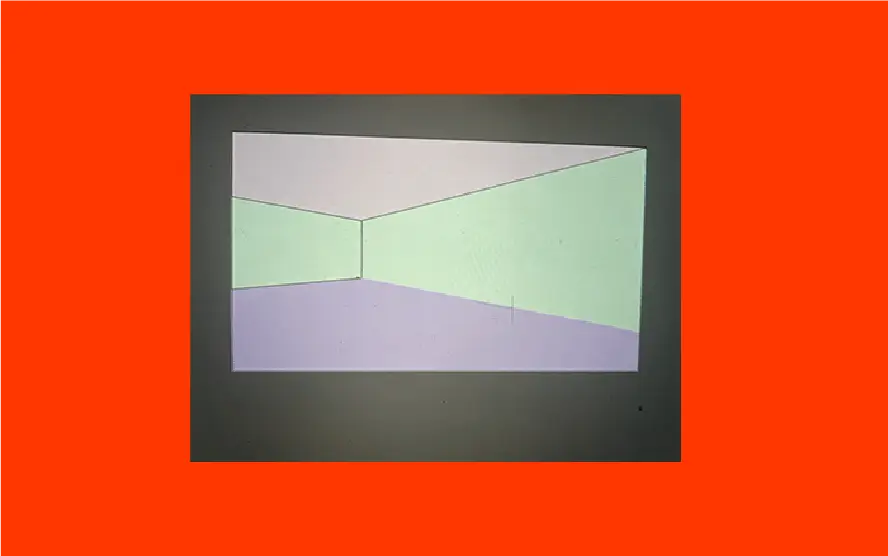
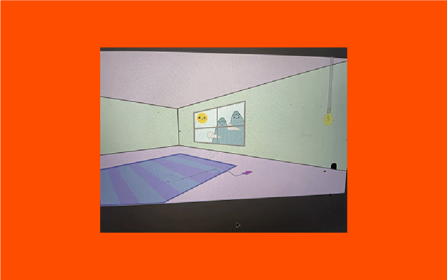
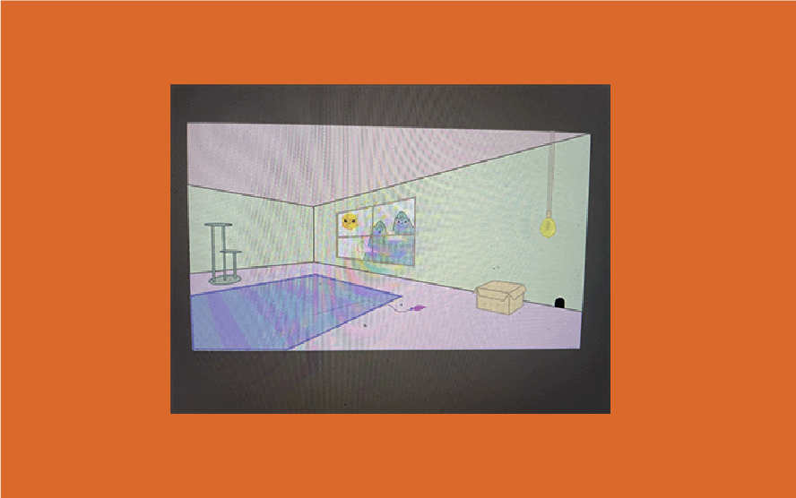
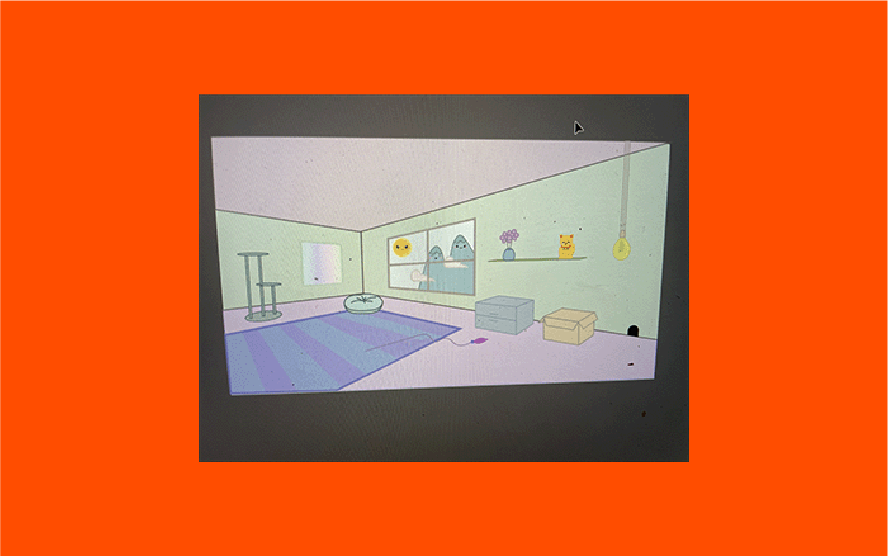
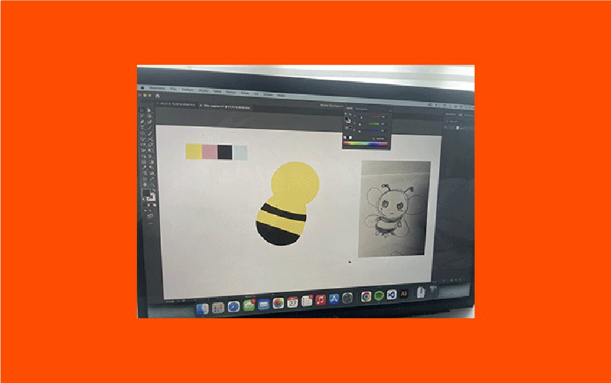
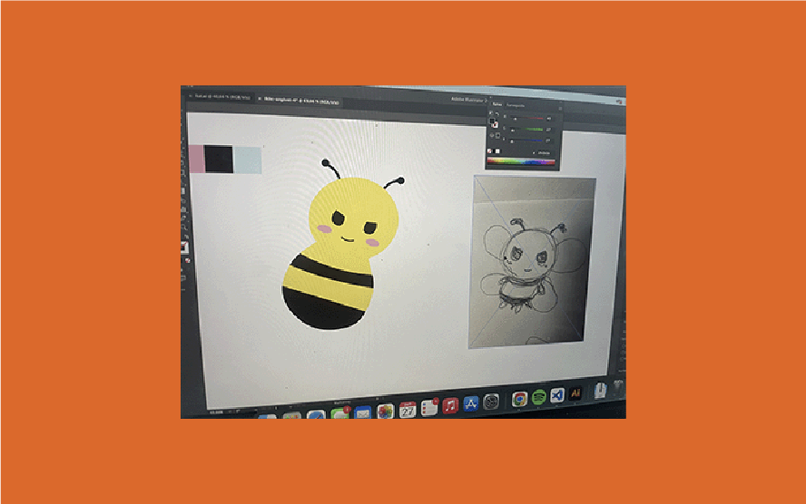
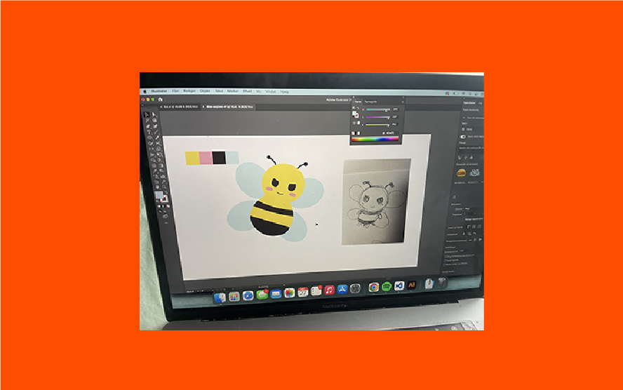
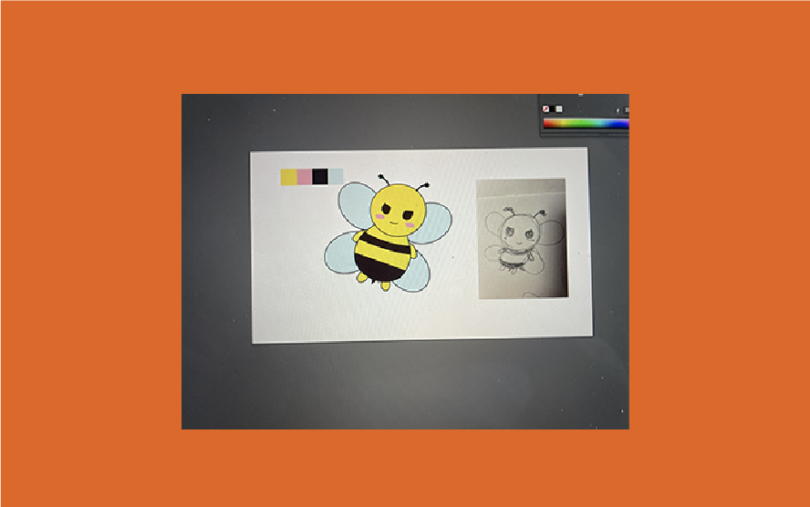
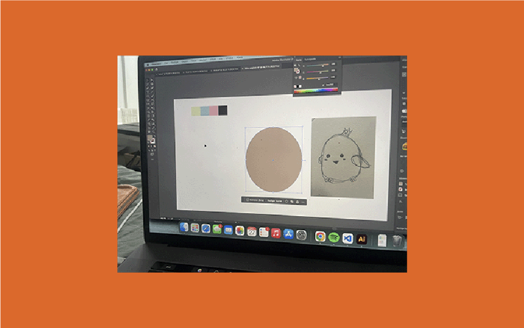
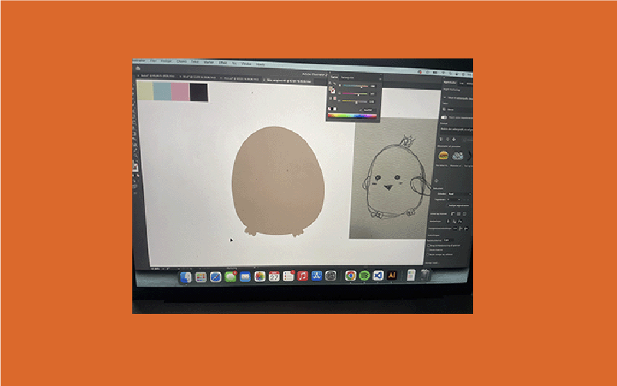
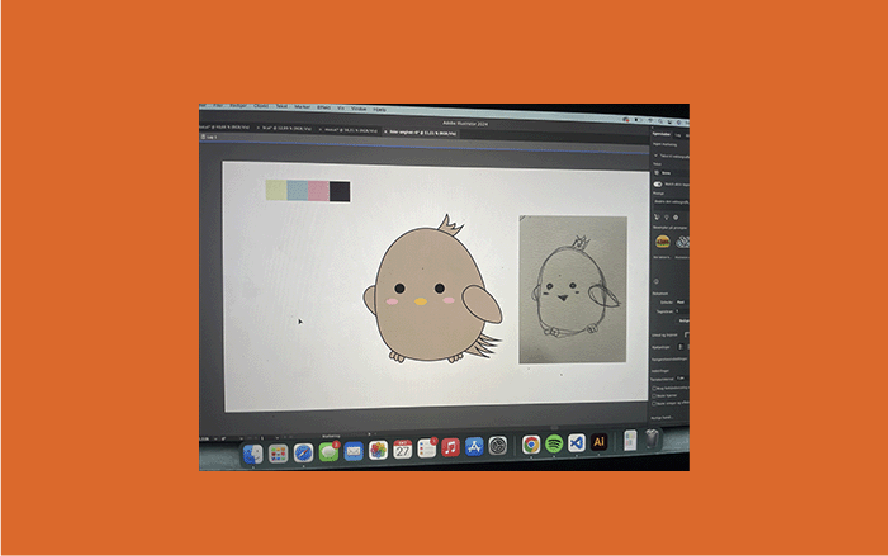
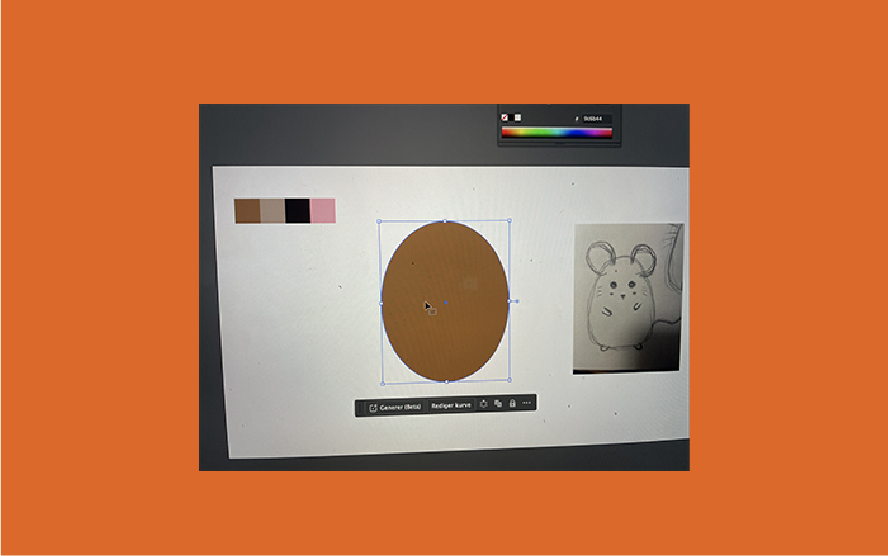
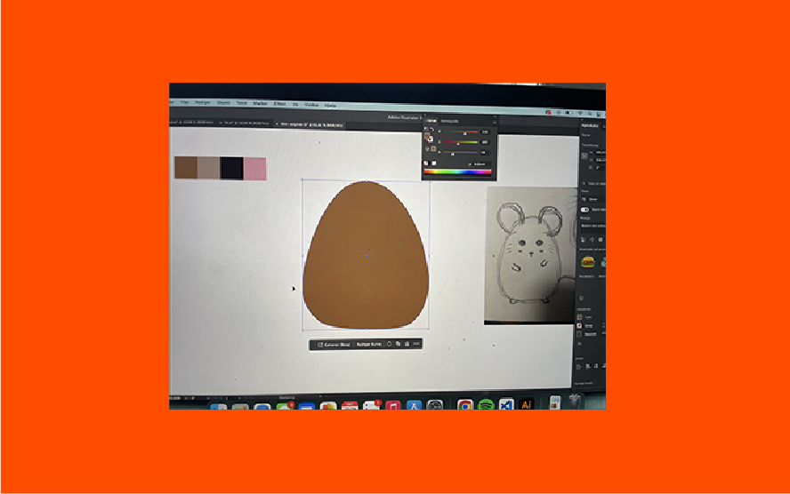
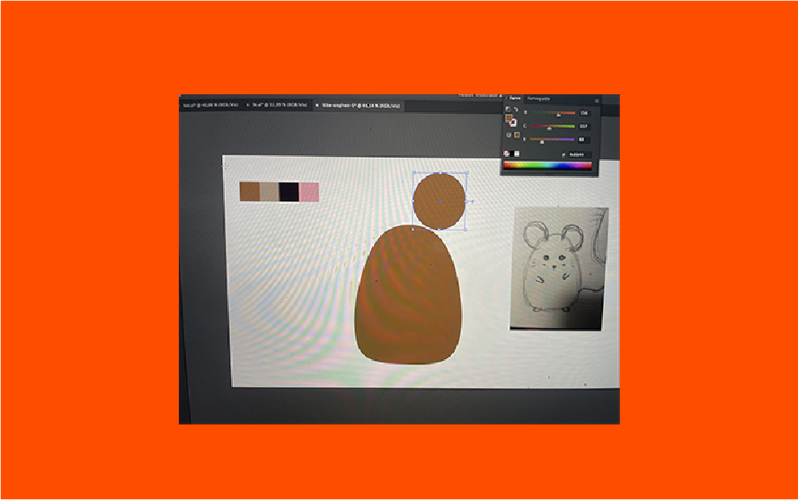
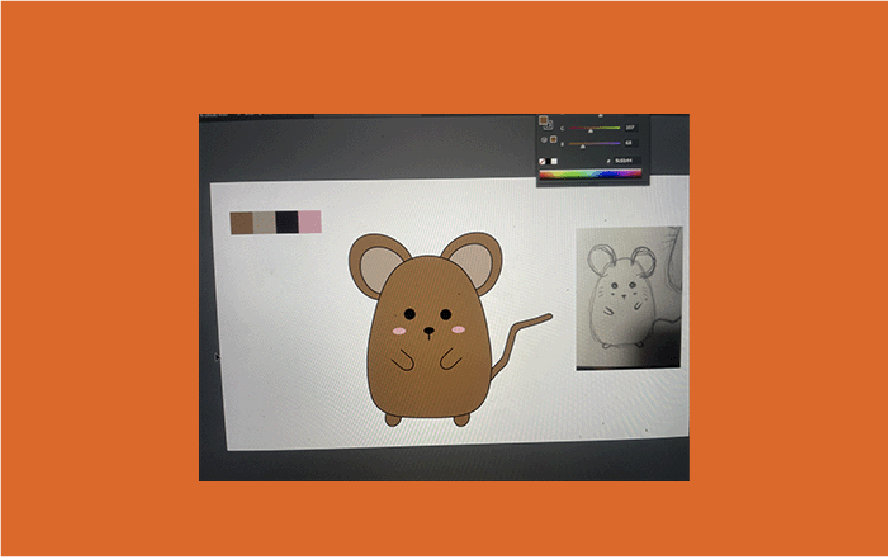
STIL
Jeg blev introduceret til forskellige spilstile. Jeg valgte stilen Kawaii 2. Jeg har hertil valgt at inkludere baby bias hvor mine karakterer har fået høj pande med store skinnende øjne. Jeg er også gået efter konceptet Bouba og Kiki, hvor de gode og onde karakterer ved hjælp af skarpe og bløde former tilføjer en visuel kontrast.
BAGGRUND
Med baggrunden har jeg ikke fulgt konventionerne , da jeg har valgt ikke at have et atmosfærisk perspektiv men i stedet skaber jeg en flad og grafisk stil.
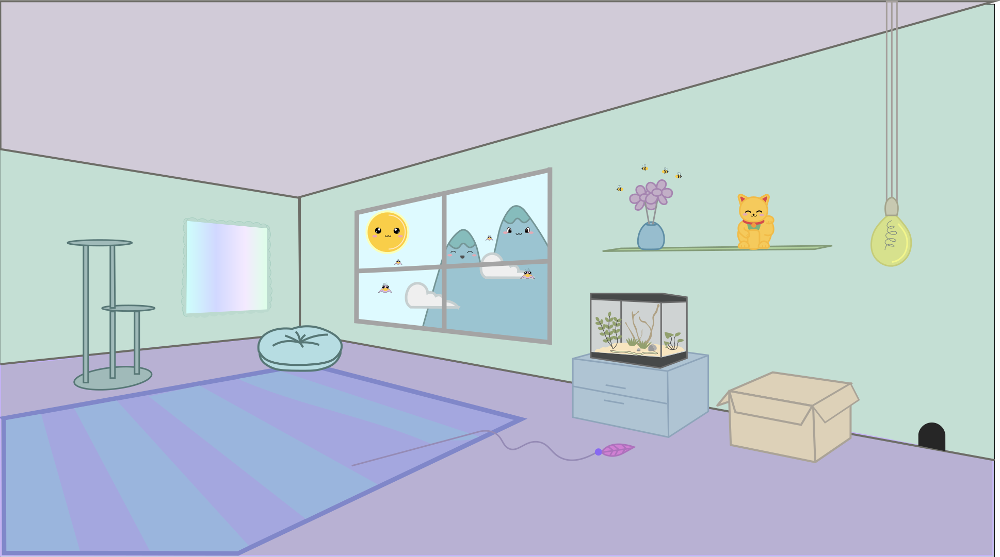